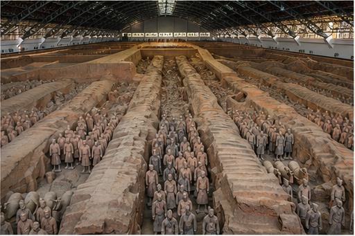
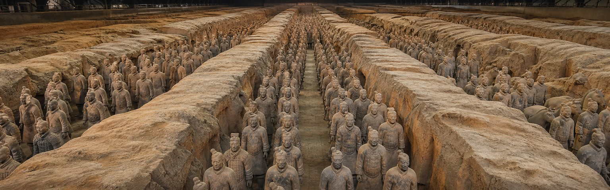
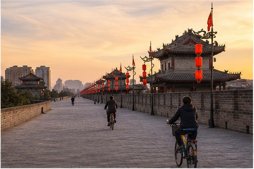
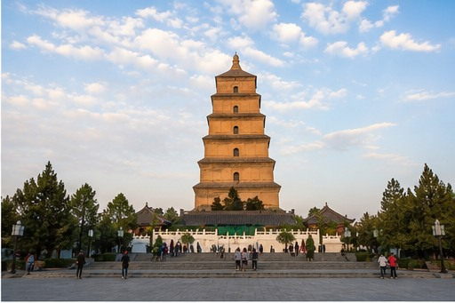
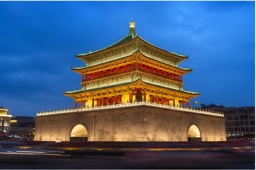
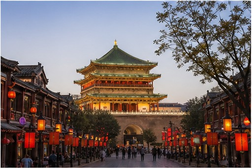
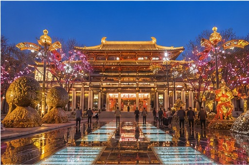
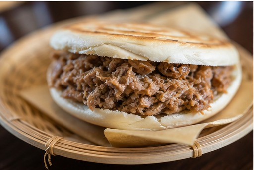

01
Terracotta Army
Thousands of life-sized warriors guarding China’s first emperor.

The eastern gateway of the Silk Road
Known historically as Chang’an, Xi’an served as the capital of thirteen dynasties and the eastern starting point of the Silk Road. The city compresses centuries of Chinese history into a remarkably approachable stop, from Qin burial armies to Tang-era pagodas and a complete Ming city wall.
Xi’an is not frozen in the past. You can spend the morning with the Terracotta Army, cycle above the old city in the afternoon, then follow food stalls and illuminated Tang-style streets after dark. Its compact center makes deep history easier to experience without the scale of Beijing.
01
Start here

Thousands of life-sized warriors guarding China’s first emperor.

Cycle or walk above one of China’s best-preserved city walls.

A Tang landmark connected to the history of Buddhism in China.

The illuminated centerpiece of Xi’an’s historic street plan.

A grand Ming structure beside some of the old city’s busiest lanes.

A theatrical evening promenade inspired by the Tang dynasty.
02
Eat like a local

03
Recommended time
A compact stay for the Terracotta Army, old city, Tang landmarks, and a proper food route.
Get ItineraryVisit the Terracotta Army, walk or cycle the city wall, see the pagoda district, and explore the old city after dark.
Add the Shaanxi History Museum, quieter neighborhoods, and more time for local food without compressing the main sights.
Add Mount Hua or another cultural stop outside the city with private transfer support.
Your Xi’an, made clearer
Tell us how much history, food, and evening atmosphere you want. We’ll shape Xi’an around the pace of your wider China route.
Start With Your Xi’an Trip